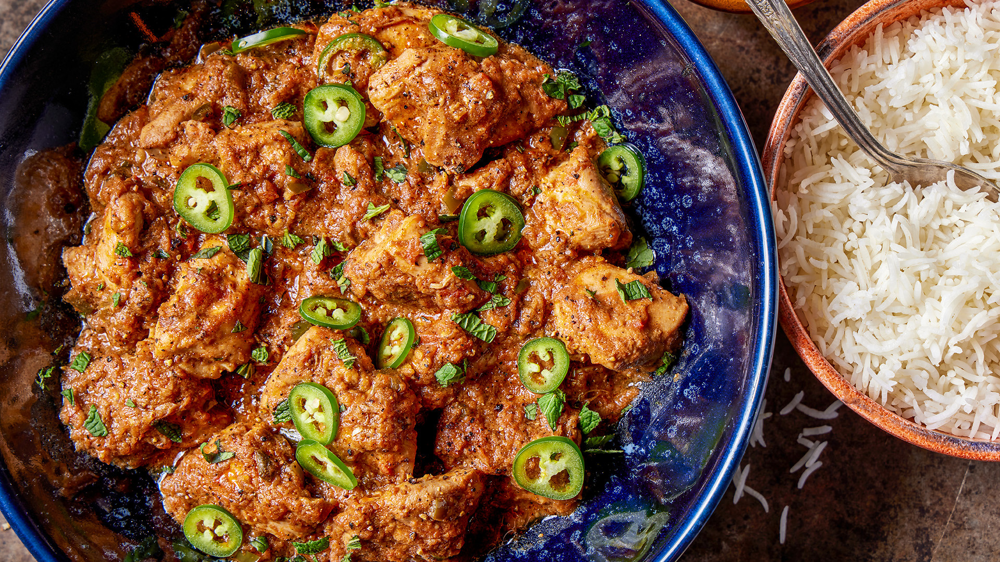

Chicken Karahi

Description
Chicken Karahi is a popular dish in Pakistani and North Indian cuisine,
named after the "karahi," a traditional wok-like pan used to cook it.
The dish typically features tender chicken cooked in a rich, flavorful sauce
made with tomatoes, ginger, garlic, green chilies, and a variety of aromatic
spices like cumin, coriander, garam masala, and sometimes fenugreek leaves.
It’s often garnished with fresh cilantro and green chilies, and served with naan or rice.
Ingredients - serving size: 2
- 2 onion (thinly sliced)
- 6 Roma tomatoes (no seeds; thinly slice)
- 2 tsp red chilli powder (consider adding equal portion of Shan masala)
- 2 tsp salt
- 1 tsp coriander powder
- 1/3 tsp whole coriander seeds
- 1/2 tsp turmeric
- 1/3 tsp cumin seeds (can add up to 1 tsp)
- 2 tbsp ginger paste
- 2 tbsp garlic paste
- green chillies (sliced along center), chopped cilantro, sliced ginger for garnish
- 4 tbsp whole fat yogurt
- 1 lb chicken thighs
- some lemon juice to taste
- 1 tsp garam masala powder OR each of the following instead of the garam masala:
- 8-10 whole peppercorns
- 4-6 cloves
- 2 whole black cardamom
- 2 whole green cardamom
- very small cinammon stick (less than 2 dimes)
Steps
- Fry the onions in some oil on high heat until they start to become golden;
add garlic, ginger and garam masala
- Once the onions are fully brown, turn the heat to medium-high,
add all the spices (except coriander seeds) and continue cooking, being sure that the onions
don’t burn to a crisp, but do become very blackish red. Keep on stirring.
Add a splash of water if they stick to the bottom of the pan.
- Once the onions turn into a paste, add chicken. Cook on high heat until the chicken
is no longer pink on the outside
- Add the tomatoes, yogurt and lemon juice, turn the heat to medium, cover and cook until a)
there isn’t liquid/curry, but it is a paste and b) oil begins to separate from the gravy
- In the last 5 mins of cooking, add the coriander seeds.
- Garnish with cilantro, green chillies and sliced ginger.
Home